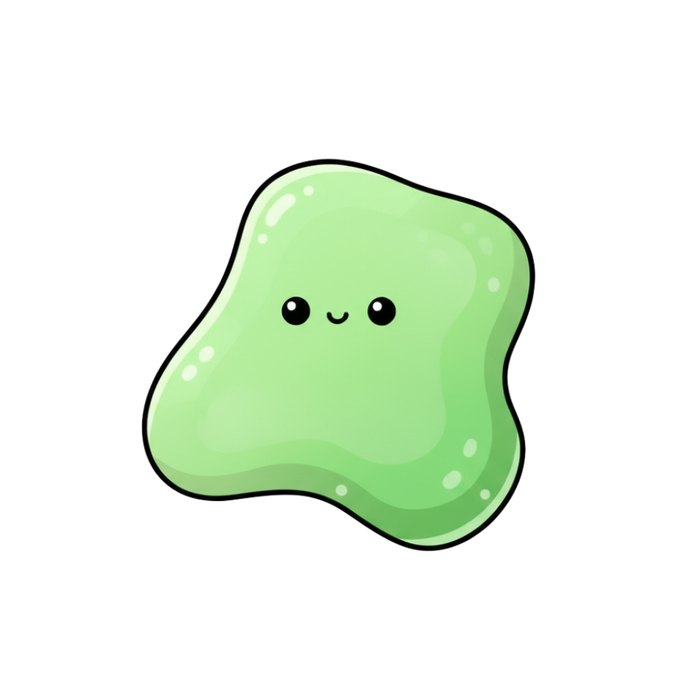

テルビウム
Terbium

テルビウムは、元素で、『レアアース（希土類元素）』と呼ばれる17種類の一つです。
🔮 擬人化キャラの性格
磁力でカタチを変える変幻自在のキャラクター！磁力を受けると身体が伸び縮みする「超磁歪（ちょうじわい）」の特技を持ち、自由に伸び縮みする変型スタイルで周りを驚かせます。鮮やかな緑色の光を放つ魔法のステッキを手に、ディスプレイや特殊技術の世界を静かに照らす、知的な導き手です。

🧪 リアルな元素の特徴
比較的柔らかくナイフで切ることができる展延性を持った銀白色の金属元素。磁場を加えることで大きく伸び縮みする「超磁歪（ちょうじわい）材料」としての特筆すべき性質や、強い刺激を受けて「美しい緑色に発光する」蛍光特性を備えています。高輝度ディスプレイ、特殊な超音波振動子、さらにネオジム磁石の耐熱性を向上させる添加剤として重要な役割を果たします。
| 名称 | テルビウム | 記号 | Tb |
|---|---|---|---|
| 番号 | 65 | 原子量 | 158.93 |
| 密度 | 8.23 g/cm3 | 原子半径 | 175 pm |
| 分類 | 希土類元素（ランタノイド） | ||
💎 テルビウム、実際はどんなもの？

テルビウムは、ナイフで切れるほどの柔らかさ（展延性）を持つ銀白色の金属元素です。空気中では比較的安定していますが、高温になると酸化して暗色の酸化物（Tb4O7など）を形成します。酸には容易に溶けて無色または極めて淡いピンク色の塩を生成します。単体の美しさだけでなく、磁力や光に対する化学的レスポンスの高さが大きな特徴です。

テルビウムは、刺激を受けると非常に美しい緑色の光を発する特質から、液晶ディスプレイや有機EL、照明の緑色蛍光体として幅広く利用されています。また、紫外線を受けると発光する性質を応用し、紙幣の偽造防止用特殊インクとしてもひそかに社会を支えています。
磁力をかけると瞬時にカタチを変える超磁歪効果を発揮し、巨大な振動を生み出す強力アクチュエータや精密音源としても活躍します！